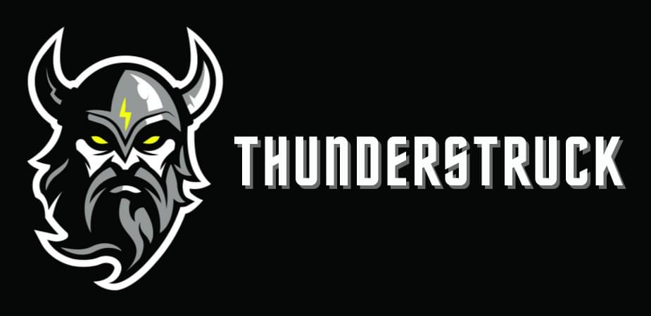

Thunderstruck Pictures · Design SystemFour variations on the Grindhouse Composed direction. The composition, layout, and structure are identical across all four — what changes is the palette and the display typeface. Each tells a slightly different story about who Thunderstruck is.
Pure black, electric yellow, heavy condensed Anton. The literal extension of the existing logo. Loudest of the four — film-poster confidence with no apology.
Original horror, action, and genre work — and a full lighting & grip rental package, delivered on our 3-ton truck across the Austin market.
Lighting, modifiers, grip, camera support, distro, expendables. A full package, delivered on our 3-ton truck across central Texas.
Heavy condensed all-caps reads like a horror movie one-sheet. Body in Inter keeps long-form copy clean and current.
Cool slate base, golden-IMDB yellow, Bebas Neue (lighter and more open than Anton). Reads as a film-festival site, not a metal one. Best for industry-facing weight.
Original horror, action, and genre work — and a full lighting & grip rental package, delivered on our 3-ton truck across the Austin market.
Lighting, modifiers, grip, camera support, distro, expendables. A full package, delivered on our 3-ton truck across central Texas.
Bebas is lighter than Anton — same condensed shape, more elegant proportions. Reads less "horror-marketing," more "film festival catalogue."
Warm dark base with cream text and amber accent. Oswald has the same condensed silhouette as Anton but a bit less aggressive. Whiskey-bar Austin energy — local, grown-up, not metal.
Original horror, action, and genre work — and a full lighting & grip rental package, delivered on our 3-ton truck across the Austin market.
Lighting, modifiers, grip, camera support, distro, expendables. A full package, delivered on our 3-ton truck across central Texas.
Oswald has the bones of Anton with a little more breathing room and warmth. Paired with cream and amber, it reads as a working Austin shop, not a horror brand.
Wine-black base, oxblood as the primary accent, yellow demoted to the lightning bolt only. Most overtly genre — leans into the horror IP without subtlety. Best if Chopper is the front door.
Original horror, action, and genre work — and a full lighting & grip rental package, delivered on our 3-ton truck across the Austin market.
Lighting, modifiers, grip, camera support, distro, expendables. A full package, delivered on our 3-ton truck across central Texas.
Same Anton typography as V1, but oxblood replaces yellow as the system color. Reads first as a horror brand and second as a rental house.